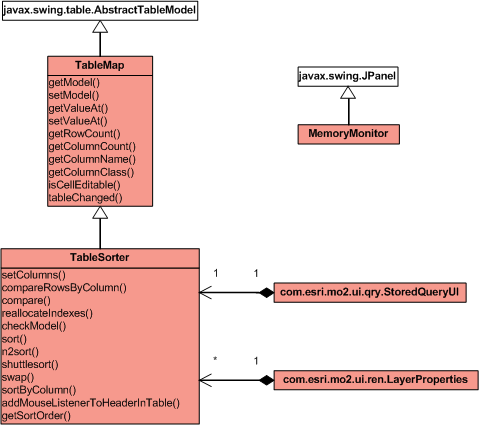

Package com.esri.mo2.ui.sun
Some useful classes that are found in the demo directories
of the J2SE distribution release.
See:
Description
|
Class Summary |
| MemoryMonitor |
Tracks Memory allocated & used, displayed in graph form. |
| TableMap |
In a chain of data manipulators some behaviour is common. |
| TableSorter |
A sorter for TableModels. |
Package com.esri.mo2.ui.sun Description
Some useful classes that are found in the demo directories
of the J2SE distribution release. These classes have been used as-is
within the Toolkit and ArcIMS applications - with minor modifications
for I18N.
The following copyright statement comes together with these
files.
-
Copyright (c) 1997-1999 by Sun Microsystems, Inc. All Rights Reserved.
-
-
Sun grants you ("Licensee") a non-exclusive, royalty free, license to use,
modify and redistribute this software in source and binary code form,
provided that i) this copyright notice and license appear on all copies of
the software; and ii) Licensee does not utilize the software in a manner
which is disparaging to Sun.
-
-
This software is provided "AS IS," without a warranty of any kind. ALL
EXPRESS OR IMPLIED CONDITIONS, REPRESENTATIONS AND WARRANTIES, INCLUDING ANY
IMPLIED WARRANTY OF MERCHANTABILITY, FITNESS FOR A PARTICULAR PURPOSE OR
NON-INFRINGEMENT, ARE HEREBY EXCLUDED. SUN AND ITS LICENSORS SHALL NOT BE
LIABLE FOR ANY DAMAGES SUFFERED BY LICENSEE AS A RESULT OF USING, MODIFYING
OR DISTRIBUTING THE SOFTWARE OR ITS DERIVATIVES. IN NO EVENT WILL SUN OR ITS
LICENSORS BE LIABLE FOR ANY LOST REVENUE, PROFIT OR DATA, OR FOR DIRECT,
INDIRECT, SPECIAL, CONSEQUENTIAL, INCIDENTAL OR PUNITIVE DAMAGES, HOWEVER
CAUSED AND REGARDLESS OF THE THEORY OF LIABILITY, ARISING OUT OF THE USE OF
OR INABILITY TO USE SOFTWARE, EVEN IF SUN HAS BEEN ADVISED OF THE
POSSIBILITY OF SUCH DAMAGES.
-
-
This software is not designed or intended for use in on-line control of
aircraft, air traffic, aircraft navigation or aircraft communications; or in
the design, construction, operation or maintenance of any nuclear
facility. Licensee represents and warrants that it will not use or
redistribute the Software for such purposes.
Class Diagram of the Package Interfaces and Classes

Click the diagram to see a printer friendly version.